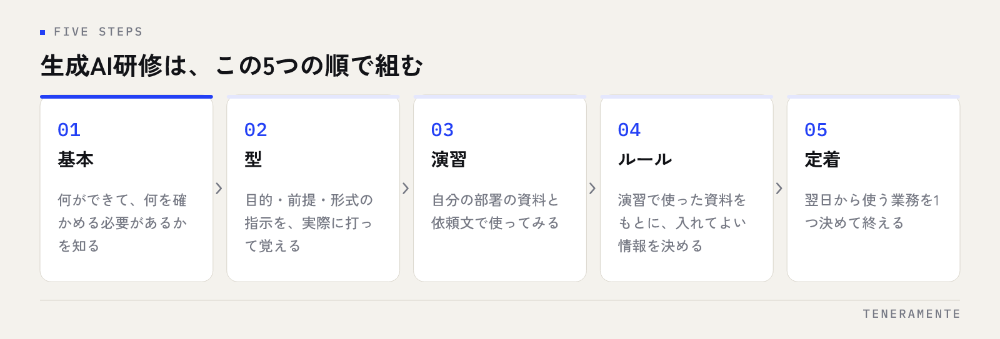

社員向けの生成AI研修を企画するとき、最初に迷うのは「何を教えればいいのか」です。結論から言うと、生成AI研修で社員に教える内容の中心は、ツールの操作ではなく仕事の渡し方です。この記事では、研修に入れる単元、プロンプトの型、部門別の活用例、入力してよい情報の線引きまでを、研修の企画担当の方がそのまま使える形で整理します。
📌 この記事の結論
生成AI研修の内容は「基本」「プロンプトの型」「部門別の演習」「利用ルール」「管理職向けの回」「研修後の定着」の6つで組みます。中でも自社の業務資料を使った部門別の演習を厚くすると、研修の翌日から使われる状態に近づきます。
01生成AI研修で社員に教える内容は「操作」より「仕事の渡し方」
生成AIのツールそのものは、ログインして文章を打ち込めば動きます。ボタンの場所や画面の見方は、研修でなくても数分で覚えられます。それでも研修が必要なのは、どんな仕事を、どう頼めば使える答えが返ってくるかが、使い始めの社員には分からないからです。
研修を受けた社員が翌日から使わなくなる理由は、たいてい「何に使えばいいか分からない」か「頼んでみたが期待した答えが返ってこなかった」のどちらかです。前者は業務とAIの結びつけ方を、後者は指示の出し方を教えていないことが原因です。
そのため、研修の内容は次の3つの問いに答えられるように組みます。
- 自分の仕事のうち、どれをAIに頼めるのか
- 頼むときに、何を伝えれば使える答えになるのか
- 頼んではいけない情報や、確かめずに使ってはいけない場面はどこか
研修会社の選び方そのものは法人向けAI研修の選び方で整理しています。この記事は、その手前の「中身を何にするか」を決めるための内容です。
02研修に入れる6つの単元と、それぞれで持ち帰るもの
社員向けの生成AI研修は、次の6つの単元で組むと抜け漏れが出にくくなります。すべてを一度にやる必要はなく、対象者と目的に合わせて必要な単元を選びます。
| 単元 | 教える内容 | 受講者が持ち帰るもの |
|---|---|---|
| 生成AIの基本 | できること・できないこと、もっともらしい誤りが出る理由 | 「確かめてから使う」前提 |
| プロンプトの型 | 目的・前提・形式を伝える指示の書き方 | 社内で使い回せる指示文のひな形 |
| 部門別の演習 | 自社の資料や依頼文を使った実習 | 自分の業務でそのまま使える例 |
| 利用ルール | 入力してよい情報の線引き、確認の手順 | 社内ルールのたたき台 |
| 管理職・経営者向け | 部下に使わせる前に決めること、効果の見方 | 部署での進め方 |
| 研修後の定着 | 使った例の共有、振り返りの場 | 続ける仕組み |
この中で研修の時間を最も多く割くべきなのは、部門別の演習です。基本とプロンプトの型は、演習の中で何度も使うことで身につきます。逆に、基本の説明だけで研修時間の大半を使うと、受講者は「便利そうだが自分の仕事では使えない」と感じたまま終わります。
利用ルールは、研修の最後に配るよりも、演習の途中で「この資料は入れてよいか」を一緒に判断しながら決めるほうが記憶に残ります。
03プロンプトの型は「目的・前提・形式」の3点を教える
プロンプト（prompt、AIへの指示文）の書き方は、コツを大量に並べるより、ひとつの型を繰り返し使うほうが定着します。研修で教える型は、次の3点に絞ると覚えやすくなります。
- 目的：何のために使う文章・資料なのか、誰が読むのか
- 前提：AIが知らない社内の事情、守ってほしい条件、参考にする資料
- 形式：文字数、箇条書きか文章か、見出しの有無、敬語の度合い
実際の研修では、次のようなひな形を配り、受講者が自分の業務に置き換えて打ち込みます。
目的：取引先に送る、納期遅れのお詫びと新しい納期のご連絡
読む人：取引先の購買担当者
前提：遅れの理由は部材の入荷遅れ。新しい納期は社内で確定済み
形式：メール本文、丁寧な敬語、要点は3行以内に収める
型を教えるときに大切なのは、一度で完成させようとしないと伝えることです。返ってきた答えに対して「もっと短く」「取引先が気にする点を先に」と追加で頼むやり取りまでを、演習の中で体験してもらいます。一回の指示で完璧な答えを求めると、多くの社員は「思ったほど使えない」と判断して手を止めてしまいます。
04部門別の活用例：営業・事務・管理部門・現場
部門別の演習では、一般的な例ではなく、自社で実際に発生している作業を題材にします。題材を選ぶときの目安は、毎週のように発生していて、文章や表を扱う作業であることです。部門ごとの代表的な題材は次のとおりです。
| 部門 | 演習の題材になりやすい作業 | 人が必ず確認する点 |
|---|---|---|
| 営業 | 提案書の骨子、商談メモの要約、お礼メールの下書き | 価格・納期・条件の正しさ |
| 事務 | 問い合わせへの返信文、社内文書の書き直し、表の整形 | 宛先と固有名詞、数字 |
| 管理部門（総務・人事） | 規程の要点の整理、社内通知の文案、求人票の言い回し | 法令や社内規程との食い違い |
| 現場・製造 | 作業手順書の書き起こし、日報の要約、引き継ぎメモ | 安全に関わる手順 |
| 管理職 | 会議の論点整理、部下への説明文、報告書の要約 | 判断そのものは人が行う |
表の右の列は、演習の中で必ず伝える部分です。AIの下書きを使うのは構いませんが、最終的に送る・決めるのは人であることを、部門ごとの具体的な確認点として教えます。
部門ごとに題材を分けると、受講者は「隣の部署の使い方」も目にします。この横の共有が、研修後に社内で使い方が広がるきっかけになります。日常業務での使い方の幅は、中小企業のChatGPT業務活用ガイドにも例をまとめています。
05入力してよい情報の線引きは、研修の中で決める
生成AI研修で欠かせないのが、情報の扱いです。社員が最も不安に感じるのは「この資料を入れてよいのか分からない」という点で、ここが曖昧なままだと、慎重な社員ほど使わなくなり、慎重でない社員は判断せずに入れてしまいます。
線引きは、情報を3つに分けると説明しやすくなります。
- 入れてよい情報：社外に公開済みの情報、一般的な文章の書き直し、個人や取引先が特定されない内容
- 加工すれば入れてよい情報：社名や個人名を伏せた商談メモ、数字を除いた社内文書
- 入れてはいけない情報：個人情報、取引先から預かった資料、未公開の財務情報や契約条件
どこに線を引くかは、使っているツールの契約形態（個人向けのプランか、法人向けのプランやAPI利用か）でも変わります。研修の場では、実際に使う資料を見ながら「これはどの区分か」を受講者と一緒に判断し、その結果をルールのたたき台として残します。ルールの書き方は生成AIの社内利用ルールのひな形も参考になります。
ルールを先に厳しくしすぎない
禁止事項だけを並べたルールを研修の冒頭で配ると、受講者は「使わないのが一番安全」と受け取ります。使ってよい場面を先に示し、そのあとで入れてはいけない情報を説明する順番にすると、使う前提でルールを覚えてもらえます。
06カリキュラムは対象者ごとに順番を変える
同じ6つの単元でも、対象者によって並べる順番と厚みが変わります。全社員に同じ内容を一度に行うより、役割ごとに分けたほうが、それぞれが持ち帰るものがはっきりします。

一般社員向けの回は、基本を短く済ませ、プロンプトの型と部門別の演習に時間を使います。自分の仕事のどれを任せられるかが分かることが、この回のゴールです。
管理職・経営者向けの回は、演習を短くし、部下に使わせる前に決めておくこと（使ってよい業務の範囲、確認の責任者、効果の見方）に時間を使います。管理職が使い方を知らないまま部下に「AIを使え」と言っても、部下は何を報告すればよいか分かりません。
推進役（各部署で使い方を広める人）を決める場合は、その人たちに一歩踏み込んだ回を用意します。自部署の題材を集め、使えた例と使えなかった例を記録し、社内で共有する役割まで説明します。
研修の進め方は、次の順で組むと受講者が迷いません。
- 基本：何ができて、何を確かめる必要があるかを知る
- 型：目的・前提・形式の指示を、実際に打って覚える
- 演習：自分の部署の資料と依頼文で使ってみる
- ルール：演習で使った資料をもとに、入れてよい情報を決める
- 定着：翌日から使う業務を1つ決めて、研修を終える
07研修内容を決める前のチェックリストと、よくある失敗
研修内容を決める前のチェックリスト
研修会社に相談する前、あるいは社内で研修を組む前に、次の項目を確認しておくと、内容の打ち合わせが早く進みます。
- 研修を受ける人の部署と役割が決まっている
- 受講者がAIを使った経験の有無を、ざっくり把握している
- 社内で使うAIツール（ChatGPT・Claude・Geminiなど）と契約形態が決まっている、または決める予定がある
- 演習の題材にする業務を、部署ごとに2〜3個ずつ挙げている
- 題材に使う資料のうち、研修で使ってよいものを選んでいる
- 入力してはいけない情報について、現時点の社内の考え方を整理している
- 研修のあとで使い方を共有する場（定例会議、チャットの部屋など）を決めている
- 研修の効果を何で見るか（使っている人の数、使った業務の例など）を決めている
題材の業務が挙がっていない状態で研修を始めると、演習が一般的な例になり、受講者の仕事とつながりにくくなります。チェックリストの中でも、題材の準備は最優先です。
よくある失敗と、その避け方
研修の中身に関する失敗は、パターンがある程度決まっています。
機能の紹介で終わる。画像生成、表の作成、要約、翻訳と、できることを次々に見せる研修は、その場では盛り上がります。ところが、受講者が自分の仕事に置き換える時間が無いため、翌日には使い道を思い出せません。機能の紹介は短くし、自社の作業で試す時間を増やします。
全員に同じ題材を使う。営業と経理では扱う文章も確認すべき点も違います。全員共通の題材だと、どの部署にとっても少しずつ遠い例になります。演習は部署ごとに分けるか、少なくとも題材を部署ごとに用意します。
ルールを研修の後回しにする。「ルールは後で総務から配ります」と言われると、受講者はそれまで使うのを控えます。研修の中でたたき台まで作り、その日から使える状態で終えます。
翌日の行動を決めずに終わる。研修の最後に「明日、どの作業で使うか」を一人ひとつ決めて書き出してもらうだけで、使い始める人が増えます。決めた作業は、次の振り返りの場で共有します。
一度きりで終える。研修の直後は使っていても、困ったときに聞ける相手がいないと手が止まります。研修のあとに、使った例と困った点を持ち寄る場を設けておくと、使い方が少しずつ揃っていきます。
08自分で進める場合と、専門家に任せる場合の分かれ目
社員向けの生成AI研修は、社内で組むこともできます。判断の分かれ目は、社内に「自分の仕事で使い込んでいる人」がいるかどうかです。
社内で進めやすいのは、すでに日常的に生成AIを使っている社員がいて、その人が他部署の業務にもある程度通じている場合です。対象が一つの部署に限られていて、扱う情報の線引きも単純であれば、社内の勉強会の形でも十分に効果があります。
外部の専門家に任せたほうがよいのは、次のような場合です。複数の部署に同時に広げたいとき、部署ごとの題材を選ぶ時間が社内で取れないとき、情報の扱いについて法人向けプランやAPI利用の使い分けまで整理したいとき、そして研修のあとに業務の自動化や社内向けのAIの仕組みまで視野に入れているときです。
もう一つの目安は、研修のあとに誰が質問を受けるかです。研修そのものは外部に頼んでも、その後の質問を社内で受けられるなら定着は進みます。社内に受け手がいない場合は、研修後の振り返りや定着の支援まで含めて任せられる相手を選ぶと、研修が一度きりで終わるのを防げます。
09よくある質問
AIを一度も使ったことがない社員が多くても、同じ内容で研修できますか？
研修で使うツールは、ChatGPT・Claude・Geminiのどれがよいですか？
プロンプトの「コツ」をたくさん教えたほうがよいのではないですか？
研修で社内の実際の資料を使っても大丈夫でしょうか？
研修の効果はどう見ればよいですか？
10まとめ：研修の内容は、自社の仕事から逆算して決める
生成AI研修で社員に教える内容は、基本・プロンプトの型・部門別の演習・利用ルール・管理職向けの回・研修後の定着の6つです。中心に置くのは、自社の資料と依頼文を使った部門別の演習で、プロンプトは目的・前提・形式の型をひとつ決めて繰り返し使います。入力してよい情報の線引きは研修の中で一緒に決め、最後に翌日から使う作業を一人ひとつ決めて終えると、受けて終わりの研修になりません。
TENERAMENTEなら、御社の実際の業務資料と依頼文を題材に、部門別の活用演習とプロンプトの型、入力してよい情報の線引きを研修の中で一緒に作り、研修後の振り返りと定着の支援まで伴走します。題材選びや社内ルールのたたき台づくりを担当者が一人で抱えずに済み、研修の翌日から使われる状態を作りやすくなります。研修の構成はAI研修のページにまとめています。初回の相談（60分）は無料ですので、「うちの業務で何から教えればいいか」という段階でも、お問い合わせからお気軽にご相談ください。